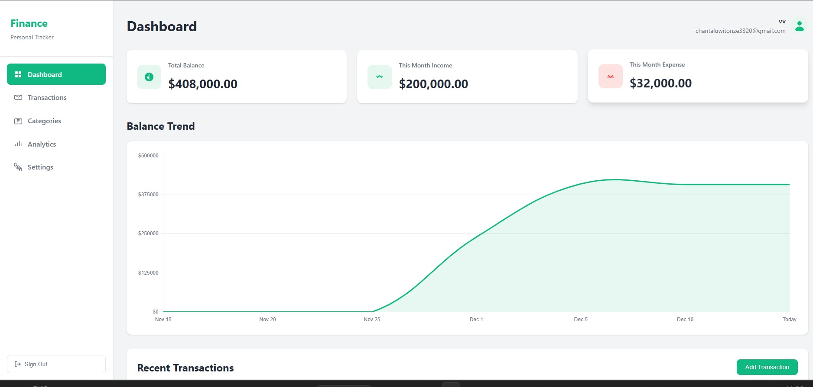
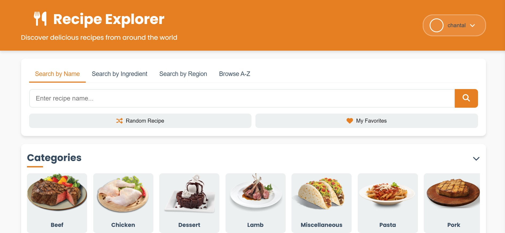

HTML • CSS • JavaScript
Finance Tracker App
Personal finance management application with expense tracking, budget planning, Firebase authentication and Firebase Database for secure data storage.

HTML • CSS • JavaScript
Recipe Explorer
A dynamic recipe discovery app using MealDB API to fetch recipe images and data with Firebase authentication for user management.

Java • Spring Boot • MySQL
Employee Management System
A comprehensive system for managing employee records, departments, and HR operations. Features include user authentication, employee profiles, department management, and reporting.

Spring Boot • MongoDB
Blog Management System
Full-featured blogging platform with user management, post creation, commenting system, and content moderation tools.